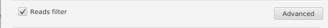
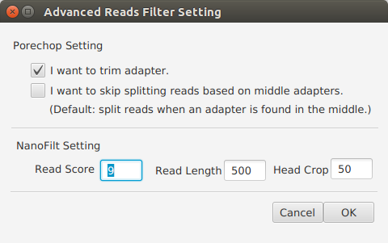

Reads Filter Settings¶
 Porechop Settings [1] (Optional)¶
Set Porechop options.
Note
- Select “I want to trim adapter” if you want to use Porechop to trim adapters. Defaut: selected.
- Select “I want to skip splitting reads based on middle adapters” if you do not want to splt reads when an adapter is found in the middle. Default: not selected.
Read Score [2] (Required)¶
Set a minimum average read quality score to filter the reads.
Note
- Default: 9.
Head Crop [2] (Required)¶
Set n nucleotides to be trimmed from start of read.
Note
- Default: 50.
| [1] | Porechop https://github.com/rrwick/Porechop |
| [2] | (1, 2) NanoFilt https://github.com/wdecoster/nanofilt |